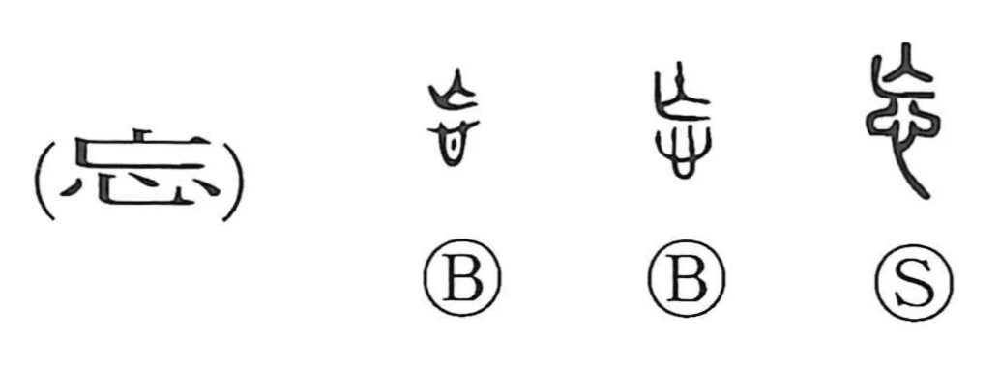

忘

Kun: wasureru | On: bou
to forget ・ forgetfulness
Explanation
A phono-semantic character: the upper element 亡, originally depicting the bones of a dead person with the limbs drawn up, supplies the sound and the sense of “perishing,” while the lower 心 marks the realm of the heart and mind. Together they portray what has “died away” from the heart—hence, to forget. Classical usage shows a positive shade to this self-forgetfulness: in the Analects (Jutsushi VII, 18), Confucius is described as forgetting to eat in eagerness and, in joy, forgetting his cares, unmindful of old age approaching—a glimpse of his character and bearing.